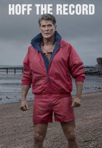
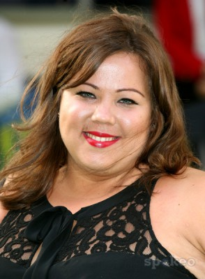
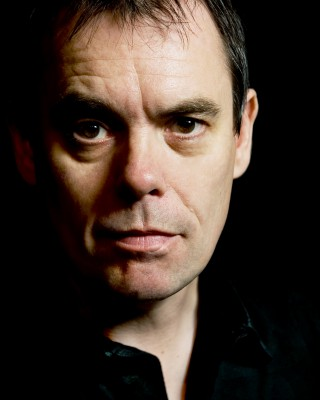
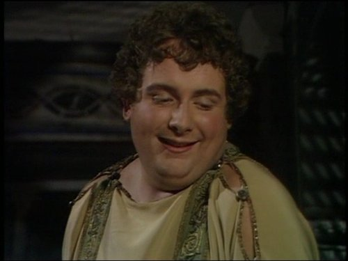

 
 IMDB-Wertung: 7.0 / 10
IMDB-Wertung: 7.0 / 10  Metascore: 0
Metascore: 0 
In der Serie "Hoff the Record" spielt David Hasselhoff eine fiktionalisierte Version seiner selbst. Der Serien-Hasselhoff versucht, nach fünf gescheiterten Ehen und anderen unglücklichen Entscheidungen neu durchzustarten.
Jahr: 2015
Dauer: 30 Minuten
FSK:
Land: England Studio: DaveTonspuren: DD2.0 - ,
Untertitel:
Auflösung: 720p (960x718) Größe: 938 MB
Genre: Komödie, TV-Serie
Regisseur: Natalie Bailey, Gordon Anderson
Drehbuch: James Lapine
Soundtrack:
Darsteller:
 David Hasselhoff als Himself
David Hasselhoff als Himself- Asim Chaudhry als Terry Patel
- Brett Goldstein als Danny Jones
-  Ella Smith als Harriet Fitzgerald
- Ashley McKinney Taylor als Title Newscaster
- Greg Lockett als Title Newscaster
 Lee Nicholas Harris als Sergie Warlord Soldier
Lee Nicholas Harris als Sergie Warlord Soldier- Jassie Mortimer als Warlords Balkan Dancer
-  Kevin Eldon als Anton De Vries
- James Lance als Anton
-  Christopher Biggins als Christopher Biggins
 Steven Cree als Mike Porridge
Steven Cree als Mike Porridge Gary Douglas als Drunk uncle
Gary Douglas als Drunk uncle Tim Downie als Dylan Turnbull
Tim Downie als Dylan Turnbull Georgie Glen als Miss Dunwoody
Georgie Glen als Miss Dunwoody- Ernest Gromov als Radovan's Guard
- Miranda Hennessy als Millie Wyatt
- Annie Lees-Jones als Mikes Assistant
 John Macmillan als Marcus Fuster
John Macmillan als Marcus Fuster- Nell Mooney als E-news Anchor
- Yuriri Naka als Japanese News Reporter
 Craig Roberts als Josh Brooke-Webb
Craig Roberts als Josh Brooke-Webb- Kevin Shen als Newsreader
- Anick Wiget als Talent Agent
 Lasco Atkins als Hoff minion
Lasco Atkins als Hoff minion- Tulisa Contostavlos als Herself
- Turlough Convery als Policeman
 Shaun Dooley als Greg
Shaun Dooley als Greg- Jessica Ellerby als Rebecca
- Kosha Engler als News Reporter
 Sarah Hadland als Patricia
Sarah Hadland als Patricia- Jessica Hynes als Deborah Sangster
- Ralf Little als Barman
 Alex Macqueen als Kurt
Alex Macqueen als Kurt- Tracy Ann Oberman als Crystal Hasselhoff
- Alexis Peterman als London Reporter
 Julian Rhind-Tutt als Bunny Vasilis
Julian Rhind-Tutt als Bunny Vasilis- Jerry Springer als Himself
- Matt Sutton als PC Paul Lewis
- Sue Vincent als Annabelle
- Fergus Craig als Max Coleman
- Mark Quartley als Dieter Hasselhoff
- Tony Montalbano als Masseuse
- Oliver Coopersmith als Alvin Macer-Wright
- Matthew Cottle als Frank Evans
- Anna Crilly als Lucinda Young
- Shayne Elsa Drummond als Hoff's Arresting Officer
- Rohan Gotobed als Ralf Williams
- Simon Greenall als Radovan Merkadic
- Raymond Griffiths als Child Hoff
Datei: X:\HD-Serien\Hoff the Record\S01\Hoff the Record S01E01 Der Film.mkv seit 25.11.2016
Festplatte: HD Serien(A-H)
 Es gibt insgesamt 182 Filme in der Gruppe 'HD-Serien'
Es gibt insgesamt 182 Filme in der Gruppe 'HD-Serien'
")